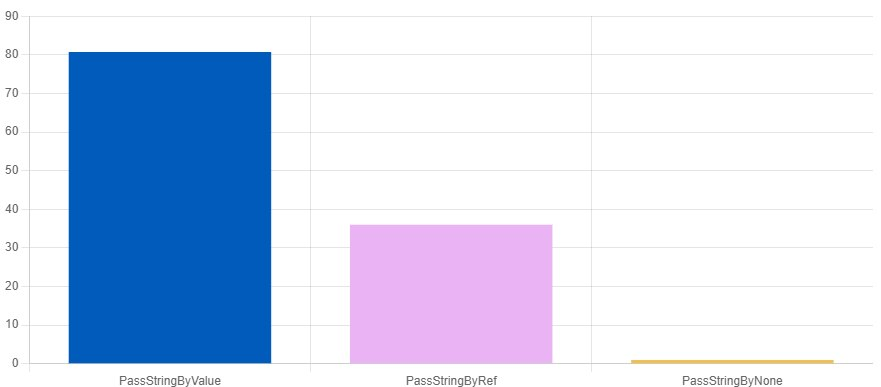
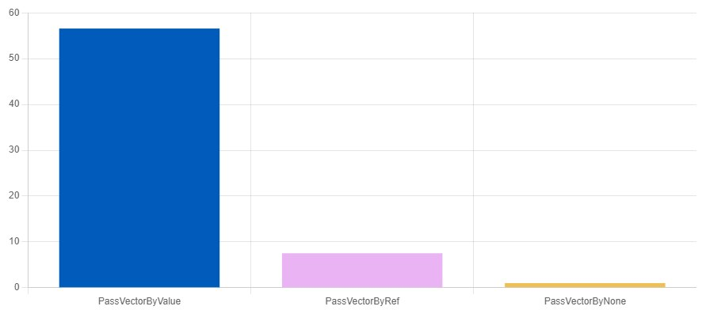
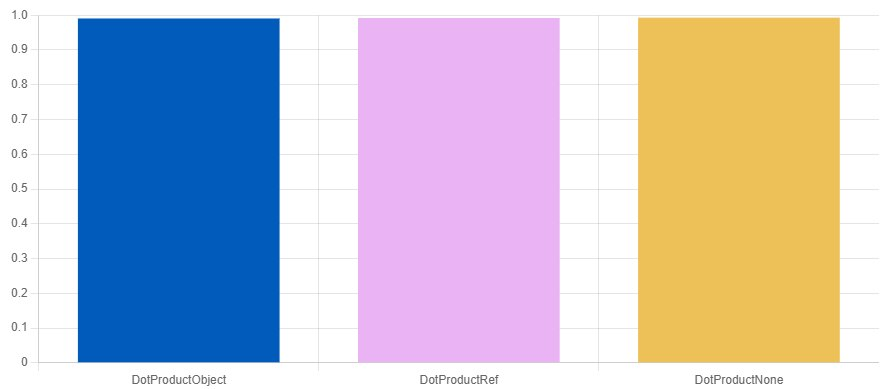
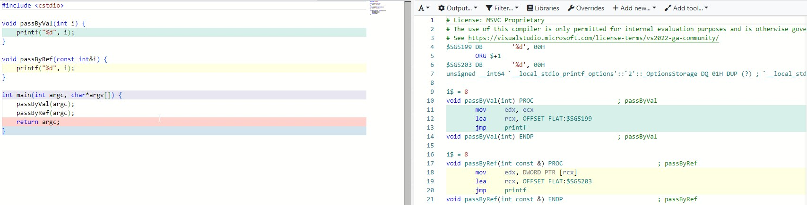
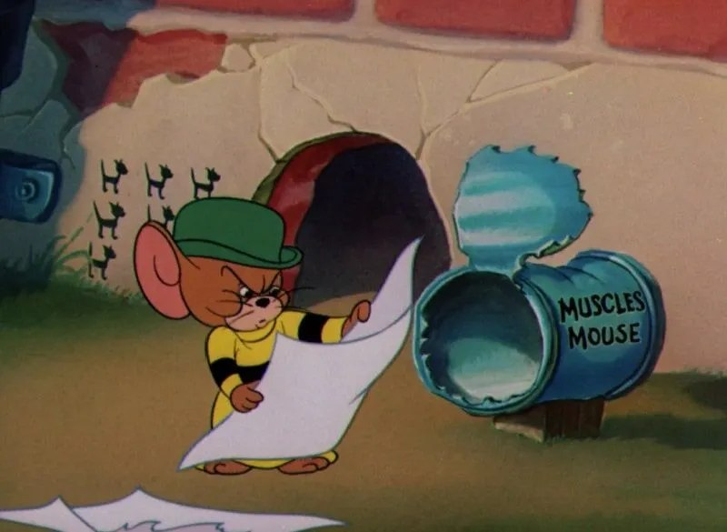
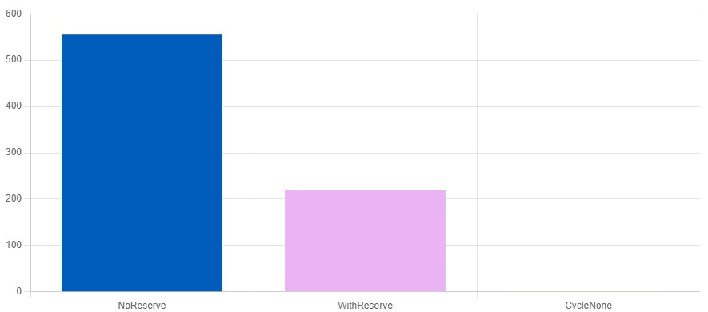

What I'm about to talk about in this article is so trivial that any developer, even a beginner, already knows it — I really do hope so. And yet the code that comes in for review shows that people did, and keep doing, something like this:
bool LoadAnimation(str::string filename);
void DrawLines(std::vector<Points> path);
Matrix RotateObject(Matrix m, Angle angle);
int DrawSprite(Sprite sprite);What do these functions have in common? An argument by value. And every time such functionality is called in the code, a copy of the input data is created in its own temporary context and passed into the function. You can forgive rarely-called code, like loading animations, or hope the compiler's optimizations kick in and eliminate the copy — but as luck would have it, more often than not this approach to development only kills performance and FPS.
Any optimization should be approached only! after analyzing it in a profiler — copies, as it turns out, may not be an expensive operation. It depends, for example, on the size of the object: the compiler handles passing objects up to 32 bytes by value just fine; there is some cost, but it's negligible and doesn't show up in benchmarks. A vendor can tweak "something like that into the platform and compiler" so that copying 32 KB from special memory regions is faster than adding a couple of numbers. And in the game itself, optimizing the "hot code," let's be honest, is often not the biggest problem of overall performance. But dynamic memory allocation can spring quite a few surprises, especially when used carelessly.
But even if the overhead is small, is there any point in burning CPU cycles when you can avoid it? Those "lost 2–3%" of smeared-out perf, which don't even light up in the profiler, are very hard to catch later and even harder to fix.
Hidden allocation on strings
#include <string>
#include <numeric>
size_t PassStringByValueImpl(std::string str) {
return std::accumulate(str.begin(), str.end(), 0, [] (size_t v, char a) {
return (v += (a == ' ') ? 1 : 0);
});
}
size_t PassStringByRefImpl(const std::string& str) {
return std::accumulate(str.begin(), str.end(), 0, [] (size_t v, char a) {
return (v += (a == ' ') ? 1 : 0);
});
}
const std::string LONG_STR("a long string that can't use Small String Optimization");
void PassStringByValue(benchmark::State& state) {
for (auto _ : state) {
size_t n = PassStringByValueImpl(LONG_STR);
benchmark::DoNotOptimize(n);
}
}
BENCHMARK(PassStringByValue);
void PassStringByRef(benchmark::State& state) {
for (auto _ : state) {
size_t n = PassStringByRefImpl(LONG_STR);
benchmark::DoNotOptimize(n);
}
}
BENCHMARK(PassStringByRef);
void PassStringByNone(benchmark::State& state) {
for (auto _ : state) {
size_t n = 0;
benchmark::DoNotOptimize(n);
}
}
BENCHMARK(PassStringByNone);
QuickBench: f6sBUE7FdwLdsU47G26yPOnnViY
Hidden allocation on arrays
size_t SumValueImpl(std::vector<unsigned> vect)
{
size_t sum = 0;
for(unsigned val: vect) { sum += val; }
return sum;
}
size_t SumRefImpl(const std::vector<unsigned>& vect)
{
size_t sum = 0;
for(unsigned val: vect) { sum += val; }
return sum;
}
const std::vector<unsigned> vect_in = { 1, 2, 3, 4, 5 };
void PassVectorByValue(benchmark::State& state) {
for (auto _ : state) {
size_t n = SumValueImpl(vect_in);
benchmark::DoNotOptimize(n);
}
}
BENCHMARK(PassVectorByValue);
void PassVectorByRef(benchmark::State& state) {
for (auto _ : state) {
size_t n = SumRefImpl(vect_in);
benchmark::DoNotOptimize(n);
}
}
BENCHMARK(PassVectorByRef);
void PassVectorByNone(benchmark::State& state) {
for (auto _ : state) {
size_t n = 0;
benchmark::DoNotOptimize(n);
}
}
BENCHMARK(PassVectorByNone);
QuickBench: GU68xgT0r97eYaCKxMzm9bXJei4
The compiler is smarter anyway
In cases where the copied object is smaller than a couple-dozen bytes, we won't notice any difference at all from passing it by reference, to the point that the generated assembly will be "almost identical."
There is a copy, but it doesn't matter
struct Vector{
double x;
double y;
double z;
};
double DotProductObjectImpl(Vector a, Vector p){
return (a.x*p.x + a.y*p.y + a.z*p.z);
}
double DotProductRefImpl(const Vector& a, const Vector& p){
return (a.x*p.x + a.y*p.y + a.z*p.z);
}
void DotProductObject(benchmark::State& state) {
Vector in = {1,2,3};
for (auto _ : state) {
double dp = DotProductObjectImpl(in, in);
benchmark::DoNotOptimize(dp);
}
}
BENCHMARK(DotProductObject);
void DotProductRef(benchmark::State& state) {
Vector in = {1,2,3};
for (auto _ : state) {
double dp = DotProductObjectImpl(in, in);
benchmark::DoNotOptimize(dp);
}
}
BENCHMARK(DotProductRef);
void DotProductNone(benchmark::State& state) {
for (auto _ : state) {
size_t n = 0;
benchmark::DoNotOptimize(n);
}
}
BENCHMARK(DotProductNone);
QuickBench: drlH-a9o4ejvWP87neq7KAyyA8o
In this example we do, of course, know the size of the struct, and the example is very simple. On the other hand, if passing by reference is clearly no slower than passing by value, using const& is "such best as we can." And passing primitive types by const& has no effect at all when compiling with the /Ox flag:

And since there's no advantage, writing something like const int &i is pointless, yet some people still do.

Reserve my vector
Arrays have a huge advantage over other data structures that often outweighs any conveniences of other containers: their elements sit in memory one after another. You can argue at length about the impact of the chosen algorithm on running time and how it affects performance, but there's nothing faster than the CPU's cache lines, and the more elements that fit in the cache, the faster even the most trivial iteration will run. Any access beyond the L1 cache immediately multiplies the running time.
But when working with vectors (dynamic arrays), many forget, or don't remember, what's under the hood. And there, if the allocated space runs out — and it was, say, allocated for 1 (one) element — then:
- A new, larger block of memory is allocated.
- All the stored elements are copied into the new block.
- The old block of memory is freed.
All these operations are costly — very fast, but costly nonetheless. And they happen under the hood and aren't visible:
- if you don't go digging through the standard library code;
- don't look at allocations with a profiler;
- trust the code written by the vendor (though here you'll have to take things as they are).
Use reserve, Luke
static void NoReserve(benchmark::State& state)
{
for (auto _ : state) {
// create a vector and add 100 elements
std::vector<size_t> v;
for(size_t i=0; i<100; i++){ v.push_back(i); }
benchmark::DoNotOptimize(v);
}
}
BENCHMARK(NoReserve);
static void WithReserve(benchmark::State& state)
{
for (auto _ : state) {
// create a vector and add 100 elements, but reserve first
std::vector<size_t> v;
v.reserve(100);
for(size_t i=0; i<100; i++){ v.push_back(i); }
benchmark::DoNotOptimize(v);
}
}
BENCHMARK(WithReserve);
static void CycleNone(benchmark::State& state) {
// create the vector only once
std::vector<size_t> v;
for (auto _ : state) {
benchmark::DoNotOptimize(v);
}
}
BENCHMARK(CycleNone);
QuickBench: OuiFp3VOZKNKaAZgM_0DkJxRock
And finally, an example of how you can kill perf and get a drop to 10 FPS out of nowhere, just by moving the mouse across the game field. I won't name the engine; the bug is already fixed. Spot the mistake — write it in the comments :)
bool findPath(Vector2 start, Vector2 finish) {
...
while (toVisit.empty() == false)
{
...
if (result == OBSTACLE_OBJECT_IN_WAY)
{
...
const std::vector<Vector2> directions{ {1.f, 0.f}, {-1.f, 0.f}, {0.f, 1.f}, {0.f, -1.f} };
for (const auto& dir : directions)
{
auto nextPos = currentPosition + dir;
if (visited.find(nextPos) == visited.end())
{
toVisit.push({ nextPos, Vector2::DistanceSq(center, nextPos) });
}
}
}
}
}